Я дипломированный специалист по психосоматике и телесно-ориентированным практикам и мастер активации кундалини.
Я провожу камбо-ретриты и групповые практики активации кундалини в Алматы, Ташкенте и других городах, а также обучаю тех, кто хочет работать с этими практиками сам. Я создаю пространство, в котором безопасно встретиться с собой настоящим.
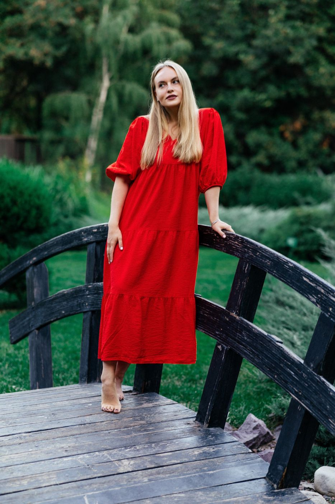
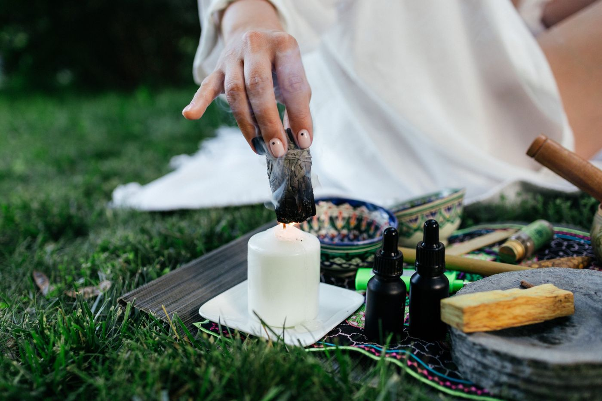
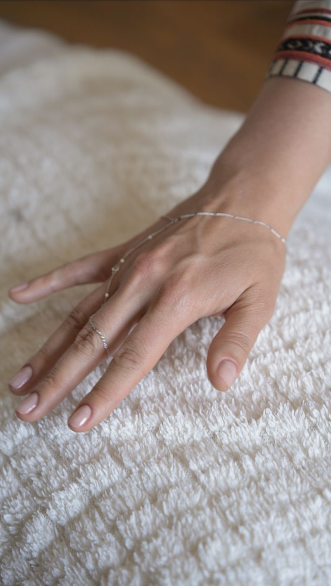
Меня зовут Анастасия Гроо. Я дипломированный специалист по психосоматике и телесно-ориентированным практикам и мастер активации кундалини.
[Ваша история: как вы пришли к камбо и кундалини, у кого учились и почему для вас важна эта работа.]
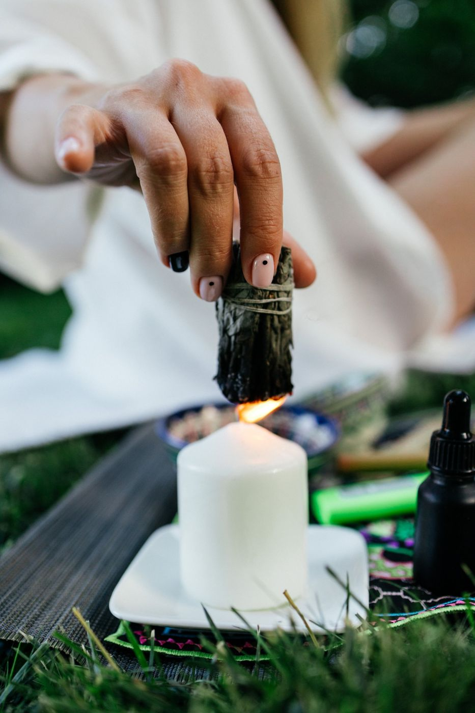
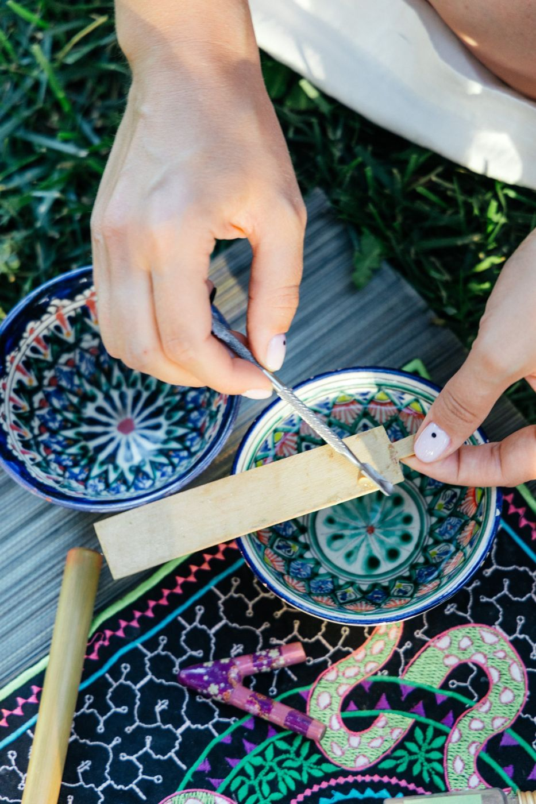
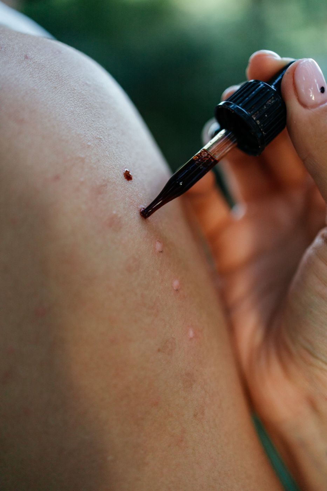
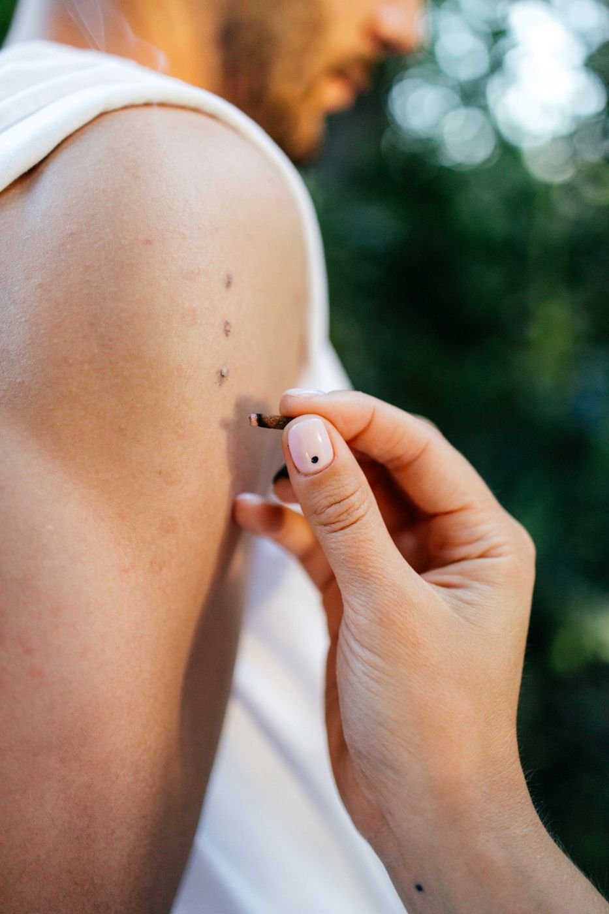
Каждый приходит со своим запросом, и каждый проходит практику по-своему. Чаще всего ко мне обращаются, когда:
Вы постоянно устаёте, и даже отдых не возвращает ощущение, что вы живёте в полную силу.
Вы привыкли всё контролировать и не показывать, что происходит внутри, и от этого становится тяжело.
Вы чувствуете, что способны на большее, но внутренние блоки и страхи не дают сделать шаг.
Вам хочется очистить тело, разум и дух, почувствовать лёгкость и начать новый этап с чистого листа.
Вы живёте в голове и хотите снова почувствовать себя настоящего, без чужих ожиданий и сценариев.
Вы проходите через перемены и ищете опору, ясность и понимание, куда двигаться дальше.
Практики не являются медицинской помощью и не заменяют лечение у врача или психотерапевта.
Количество мест в группах ограничено. Если в вашем городе пока нет даты, напишите мне, и я сообщу о следующей практике.
Новые даты скоро появятся. Напишите мне, и я сообщу о ближайшей практике первой.
Хочу практику в своём городе Следите за новыми датами в Instagram @kambo.retreat.Камбо-ретрит позволяет очистить тело, разум и дух. После прохождения ретрита человек чувствует лёгкость не только в теле, но и в делах.
Ретрит проходит в небольшой группе до 4 человек и длится 3–4 часа. Камбо — духовная практика, а не медицинская процедура, поэтому перед записью я обязательно знакомлю каждого с противопоказаниями.
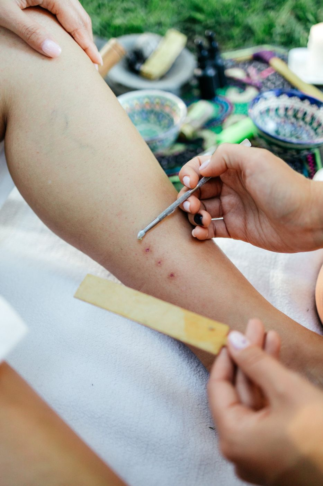
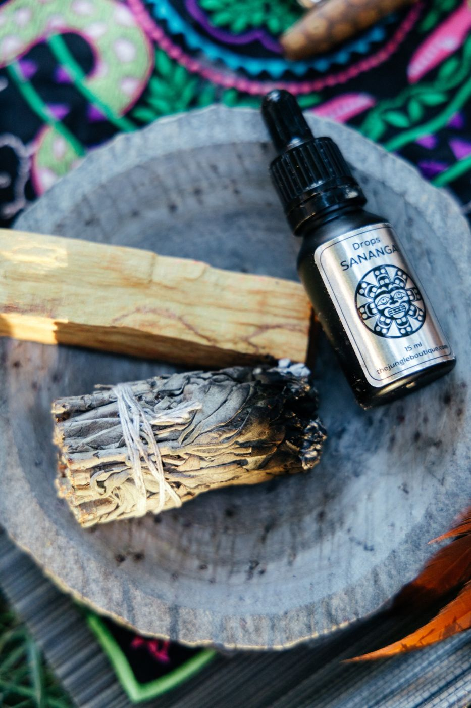
Пожалуйста, внимательно прочитайте этот список до записи. Если у вас есть сомнения по любому пункту, обязательно скажите мне об этом и посоветуйтесь с врачом.
Активация кундалини — это процесс пробуждения внутренней энергии, которая спит в основании позвоночника. Кундалини представляет собой мощный поток энергии, который поднимается вверх через чакры и энергетические каналы тела, помогая трансформировать человека на физическом, эмоциональном и духовном уровнях.
Это групповая практика, на которой вы закрываете глаза, звучит музыка, и вы позволяете себе отпустить контроль. Здесь нет правильного или неправильного опыта, есть только ваш собственный.
Для многих эта практика становится началом внутренней трансформации, но каждый проходит её по-своему. Здесь не нужно ничего уметь и ни во что верить, нужно только быть готовым честно почувствовать себя.
Если вы не уверены, подходит ли вам практика, напишите мне до записи, и мы обсудим это лично.
Уточнить, подходит ли мне практика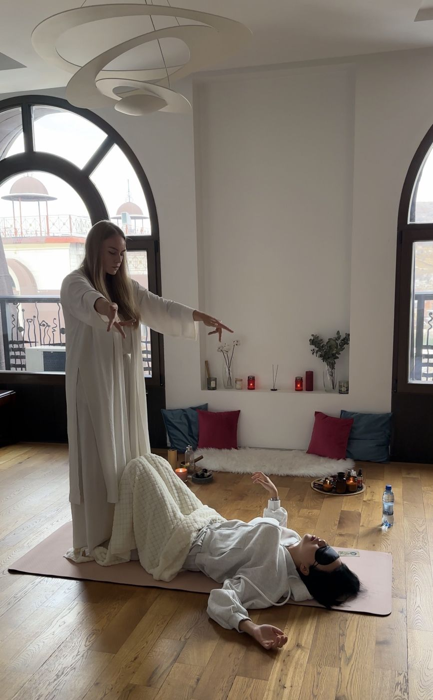
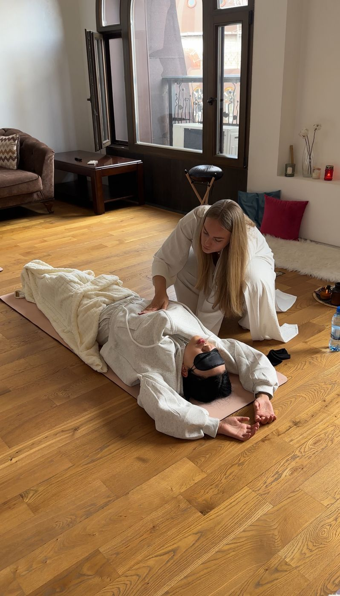
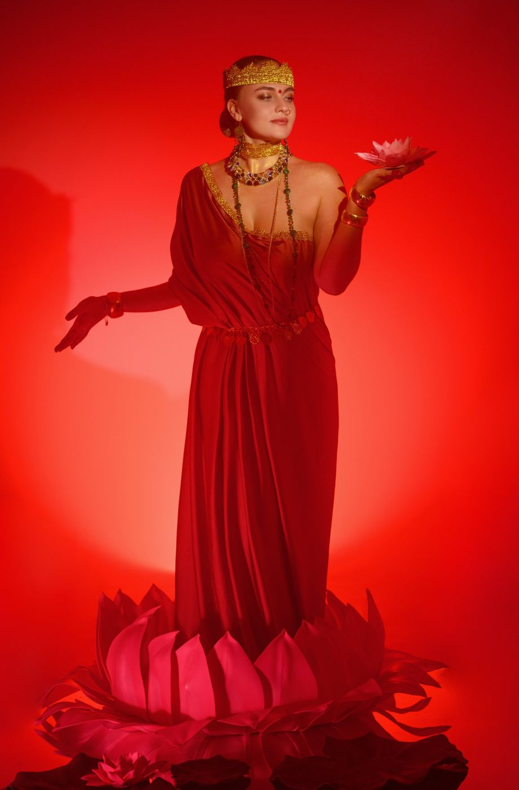
Я обучаю тех, кто хочет не только пройти практику, но и научиться работать с ней самостоятельно.
Обучение проходит онлайн, поэтому присоединиться можно из любой страны. Оно открывает два пути, и вы можете выбрать один из них или оба сразу.
Обучение для тех, кто сам прошёл камбо и хочет научиться проводить церемонии для других людей.
Напишите мне в Instagram или Telegram, какая практика или какое обучение вас интересует.
Я пришлю описание практики, ближайшие даты и список противопоказаний.
Мы обсудим ваш запрос к практике, и я отвечу на все ваши вопросы.
Вы выбираете дату, и я бронирую для вас место в группе.
Выберите, где вам удобнее написать мне.